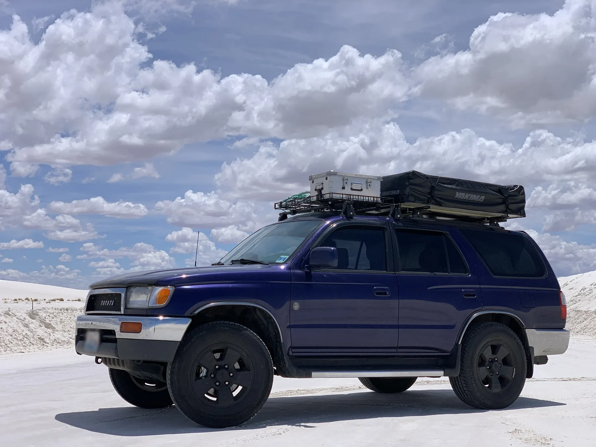

WHY I BUILT THIS
I'm Derek. I've daily driven my 1997 4Runner SR5 since 2003: 410,000 miles, all of the lower 48 states, eight full laps around the country. I know these trucks inside and out.
It started with black ice I didn't see coming and a rooftop tent I could never get level. A lot of what's out there is a universal gauge, put in a new case and wedged in where the clock was. My one rule was factory fit: no changes to the dash, the factory mounting points and plug, and a screen that fills the factory bezel. Nothing like that existed, so I built it.
OVERCLOCK is me and my son, in small batches out of our garage in Vancouver, Washington. We hand-solder the connectors, print the cases, and assemble, test and pack every unit. It's open to tinkering too: a rescue mode and a library for the board let you run your own firmware.
Derek
